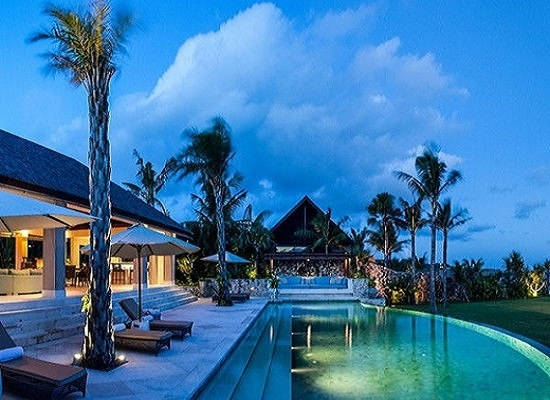
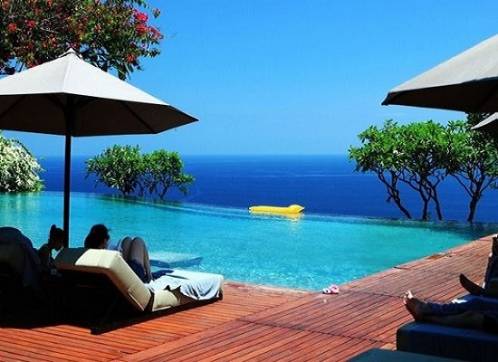

巴 厘 岛
巴厘岛（Bali Island），印度尼西亚岛屿，位于爪哇岛东部，面积5620平方公里，岛上热带植被茂密，是举世闻名的旅游岛。 巴厘岛上大部分为山地，全岛山脉纵横，地势东高西低，岛上最高峰是阿贡火山海拔3142米，巴厘岛是印度尼西亚唯一信奉印度教的地区，80%的人信奉印度教，当地的语言是巴厘语，也通行印尼语和英语，由于巴厘岛万种风情，景物甚为绮丽，因此它还享有多种别称，如“神明之岛”、“恶魔之岛”、“罗曼斯岛”、“绮丽之岛”、“天堂之岛”、“魔幻之岛”、“花之岛”等，2015年由美国著名旅游杂志《旅游+休闲》一项调查结果把印尼巴厘岛评为世界上最佳的岛屿之一。
最佳旅游时间：5月-9月，比较凉爽，舒适惬意。
巴厘岛是世界著名的旅游圣地，也是印尼旅游业的领头羊，连续几年占印尼旅游收入的45%，巴厘当地居民的80%都从事旅游业。据资料统计，每年来巴厘岛的外国游客总数达300多万人次，酒店的住房率平均达到90%。巴厘岛的外国游客曾经以澳大利亚、日本和欧美人为主，但自2006年起，中国游客数量已占据外国游客总数的四分之一。北京、上海等经济发达城市来巴厘岛的游客逐渐增多，每逢春节以及“五一”、“十一”黄金周，甚至有京、沪两地游客包机到巴厘岛旅游。为此，巴厘旅游业把中国作为最重要的旅游客源市场加以开发。酒店业是中国游客增多的直接受益者。......[详细]
魔幻之岛
2021.07.01 来源：导游--小团团
雨季结束后的一个月（4月）是巴厘岛最热的季节，5月到9月比较凉爽（这时是前往巴厘岛旅游的最佳季节）。巴厘岛的地区天气状况，除了中部山区气温略低，海边地区气温较高外，其它地区大多是晴朗炎热的好天气。
 
yyds 2021-07-01 17:38:39
风景十分美丽，真的很不错，行程安排的也很好！伊露岛的美，让我们的蜜月越发美满！推荐大家携家人一起前往
来自：西安驴友 www.1517.com

安妮 2021-06-30 19:08:33
海鲜贼便宜，而且新鲜！椰子很好喝，还是免费的喔
来自：宝鸡驴友 www.1517.com

钢铁侠 2021-06-30 13:38:53
岛上的原著居民热情好客，待人彬彬有礼；以诚相待；下次还来
来自：渭南驴友 www.1517.com
留言板 咨询电话：********* 期待您的光临
公司简介 | About US| 广告服务 | 联系我们 | 招聘信息 | 旅游资讯
智慧旅游